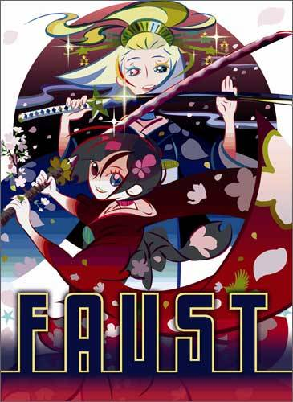
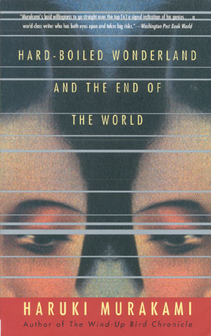
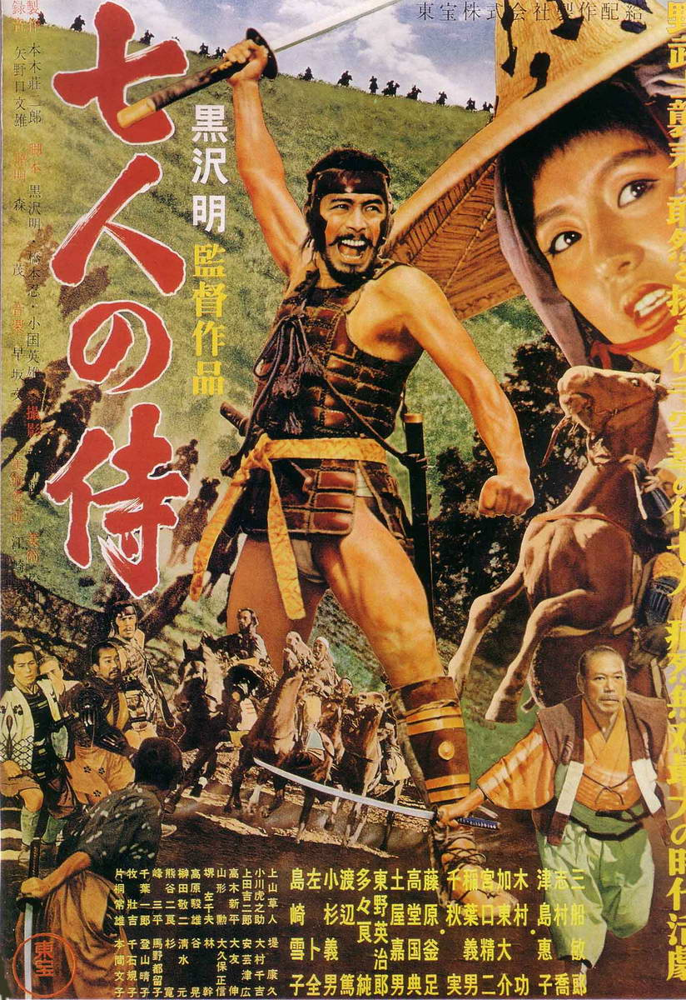

Attendance/participation:
5 points
The part of your grade that makes all others easy is attendance and participation. If you come to screenings, lectures, and discussion sections, you will go a long way towards knowing and understanding the material. Although all films will be on reserve at the library, attendance at least twelve of the film screenings is required for your participation in the course.
Attendance and participation will be assessed through your clicking with your iClicker at screenings, lectures, and discussion sections. Bring your iClicker with you to every class.
You are required to purchase an i>clicker remote for in-class participation. i>clicker is a response system that allows you to respond to questions I pose during class, and you will be graded on that feedback and/or your in-class participation. In order to receive this credit, you will need to register your i>clicker remote online within the first TWO WEEKS of class. You must have come to class at least once and voted on at least one question in order to complete this registration properly. For more on i>clicker and instructions click here.
Pop QUizzes:
5 points
Pop quizzes may be given at anytime throughout the semester on a given week’s readings. Quizzes will be given when only a few students are participating in discussion or when it appears only a few students have completed the reading or screening assignments for the week.
A student’s lowest 1/3 of scores will be dropped before the pop quiz average is derived and entered into your final grade. Since one third of the quizzes may be dropped there will be no make up quizzes for lateness or absentee-ism.
All quizzes will be administered through the iClicker system. Yet another good reason not to ever for get your clicker.
Film Journal:
10 points
Since we will be watching many films and film clips over the course of the semester, the likelihood of forgetting or misremembering a film is high. This assignment will help you remember at least half of the films.
Students will keep a film journal for ten of the films screened throughout the semester. Journals will include basic information like title, year, director, actors, and plot summary in addition to notes on a themes and particularly meaningful scenes and shots. See film journal template.
4 Experiments in Media:
20 points
Throughout the semester we will have four assignments in which students will actively apply the knowledge they have learned to various media. Descriptions of each project will be posted to the Docs page.
Para/photograph -- Writing with light and words…
Due Week 3
2. Editing — Choose a Youtube clip and describe....
Due Week 6
3. Theater in a box — In your home vs. in your theater...
Due Week 9
4. Cell/cel/Net — Choose your own experiment....
Due Week 12
Quiz on Japanese/Film Terms:
10 points
Project/Presentation:
10 points
Groups of 5-7 students will present independent research on a topic related to the topic of the week of their presentation. Students must sign up by January 31 for a group. Groups must obtain approval from their seminar instructor by two weeks prior to their presentation date. Presentations shall take no more than 20 minutes total. See group presentation description sheet on the Docs page (to be posted).
Take Home Mid-Term:
20 points
5 Identification and significance topics. 10 points each.
1 essays (choose from three). 50 points.
Final PAPER:
20 points
Your final paper will be due in four stages: Thesis, Intro/Outline, Rough Draft, Final. Each stage is worth 5 points.
Thesis
Due March 22
1-3 sentences submit to Angel Dropbox
Intro paragraph and Outline
Due March 29
1pg submit to Angel Dropbox
Rough
Due April 19
3-5 pages submit to Angel Dropbox
Final
Due April 30
3-5 pages submit to Angel Dropbox

Grade Components
Attendance/participation:
5
Pop QUizzes:
5
Film Journal:
10
4 Experiments in Media:
20
Quiz on Japanese/Film Terms:
10
Project/Presentation:
10
Take Home Mid-Term:
20
Final PAPER:
20
Your Homework
Watch the films. Do the readings. Complete your 10 Film Journals. Complete your 4 experiments. Complete your presentation preparation. Study for the quizzes and exam. Write your final paper.
Required Texts
In addition to the iClicker,
The following books are available at Comic Swap and the Penn State Bookstore. All other readings are available for download from the course schedule page.
 
BOOKS
Hagio Moto, Drunken Dream
Faust 1
Murakami Haruki, Hardboiled Wonderland and the End of the World
Are Film Ads and posters part of the Medium?

Do they influence meaning?
Do they contribute to our experience of the film?
How do they differ from film as a medium?
Grading


Course Requirements